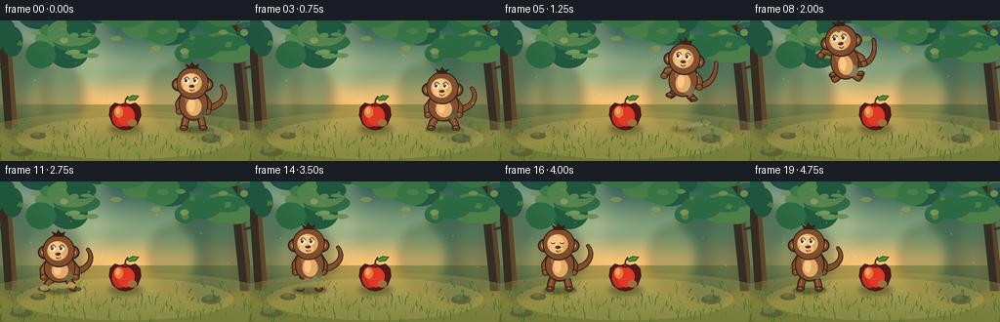
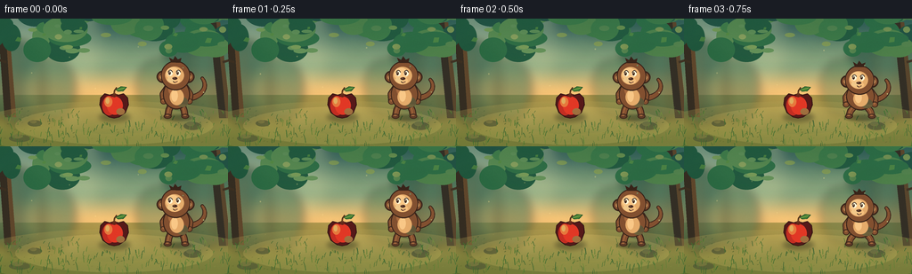

CODING AGENTS AS PIXEL WORLD MODELS
traex/DeepSeek-V4.1-Flash · dynamic_spatial_relationship_0057
点击播放 · 原生 RGB 像素
逐轮保存的候选
回放视频、检查图与代码变化。
每份候选均可单独播放。实际图片检查记录在下方工具轨迹中。
候选 01播放与检查图
点击播放 · 原生 RGB 像素

展开代码变化
--- 上一保存版本
+++ 本次保存版本
@@ -0,0 +1,772 @@
+from __future__ import annotations
+
+import json
+import math
+import random
+import subprocess
+from pathlib import Path
+
+import numpy as np
+from PIL import Image, ImageDraw, ImageFilter
+
+import artifact_io
+
+
+ROOT = Path(__file__).resolve().parent
+SPEC = json.loads((ROOT / "task_spec.json").read_text())
+W = int(SPEC["width"])
+H = int(SPEC["height"])
+N = int(SPEC["frames"])
+FPS = float(SPEC["fps"])
+
+# Draw at a larger resolution, then downsample for clean low-resolution edges.
+S = 4
+WW, HH = W * S, H * S
+
+GROUND_Y = 111.0
+APPLE_X = 128.0
+MONKEY_START_X = 198.0
+MONKEY_END_X = 61.0
+
+FUR_DARK = (54, 34, 25, 255)
+FUR = (126, 78, 48, 255)
+FUR_LIGHT = (161, 103, 63, 255)
+FUR_SHADOW = (91, 57, 39, 255)
+SKIN = (222, 168, 108, 255)
+SKIN_LIGHT = (242, 196, 137, 255)
+INK = (39, 26, 22, 255)
+
+
+def box(values):
+ return tuple(int(round(value * S)) for value in values)
+
+
+def px(value):
+ return int(round(value * S))
+
+
+def ellipse(draw, values, fill, outline=None, width=0):
+ draw.ellipse(
+ box(values),
+ fill=fill,
+ outline=outline,
+ width=px(width) if outline is not None else 0,
+ )
+
+
+def polygon(draw, points, fill, outline=None, width=0):
+ scaled = [(px(x), px(y)) for x, y in points]
+ draw.polygon(scaled, fill=fill)
+ if outline is not None:
+ draw.line(scaled + [scaled[0]], fill=outline, width=px(width), joint="curve")
+
+
+def line(draw, points, fill, width, joint="curve"):
+ draw.line([(px(x), px(y)) for x, y in points], fill=fill, width=px(width), joint=joint)
+
+
+def arc(draw, values, start, end, fill, width):
+ draw.arc(box(values), start=start, end=end, fill=fill, width=px(width))
+
+
+def lerp(a, b, t):
+ return a + (b - a) * t
+
+
+def lerp_point(a, b, t):
+ return (lerp(a[0], b[0], t), lerp(a[1], b[1], t))
+
+
+def smoothstep(t):
+ t = max(0.0, min(1.0, t))
+ return t * t * (3.0 - 2.0 * t)
+
+
+def make_gradient():
+ y = np.linspace(0.0, 1.0, H)[:, None]
+ x = np.linspace(0.0, 1.0, W)[None, :]
+
+ sky_top = np.array([34, 92, 92], dtype=np.float32)
+ sky_mid = np.array([120, 162, 133], dtype=np.float32)
+ sky_horizon = np.array([232, 194, 124], dtype=np.float32)
+ ground_near = np.array([82, 111, 55], dtype=np.float32)
+ ground_far = np.array([160, 151, 82], dtype=np.float32)
+
+ image = np.zeros((H, W, 3), dtype=np.float32)
+ for row in range(H):
+ if row < 86:
+ t = row / 85.0
+ if t < 0.58:
+ color = lerp(sky_top, sky_mid, smoothstep(t / 0.58))
+ else:
+ color = lerp(sky_mid, sky_horizon, smoothstep((t - 0.58) / 0.42))
+ else:
+ t = (row - 86.0) / max(1.0, H - 87.0)
+ color = lerp(ground_far, ground_near, smoothstep(t))
+ image[row, :, :] = color
+
+ # Warm sunlight from the upper left and a cool forest edge on the right.
+ image += np.clip(34.0 - 70.0 * np.sqrt((x - 0.12) ** 2 + (y - 0.08) ** 2), 0.0, 34.0)[..., None]
+ image[:, :, 0] += 12.0
+ image[:, :, 2] -= 5.0
+ image = np.clip(image, 0, 255).astype(np.uint8)
+ return Image.fromarray(image, "RGB").resize((WW, HH), Image.Resampling.BICUBIC).convert("RGBA")
+
+
+def add_blurred_layer(base, layer, radius):
+ layer = layer.filter(ImageFilter.GaussianBlur(radius * S))
+ return Image.alpha_composite(base, layer)
+
+
+def draw_background():
+ rng = random.Random(57)
+ base = make_gradient()
+
+ haze = Image.new("RGBA", (WW, HH), (0, 0, 0, 0))
+ d = ImageDraw.Draw(haze)
+ ellipse(d, (-44, -48, 118, 106), (255, 238, 177, 76))
+ for start_x, end_x, alpha in ((-22, 84, 24), (20, 158, 18), (58, 232, 12)):
+ polygon(
+ d,
+ [(start_x, 0), (start_x + 25, 0), (end_x + 28, 130), (end_x - 15, 130)],
+ (255, 239, 177, alpha),
+ )
+ base = add_blurred_layer(base, haze, 9)
+
+ distant = Image.new("RGBA", (WW, HH), (0, 0, 0, 0))
+ d = ImageDraw.Draw(distant)
+ # Soft silhouettes of distant trees establish depth without competing with the actors.
+ for cx, cy, rx, ry, color in (
+ (20, 72, 33, 47, (40, 83, 67, 160)),
+ (57, 79, 28, 36, (46, 91, 67, 120)),
+ (214, 73, 38, 48, (34, 77, 65, 170)),
+ (245, 68, 30, 44, (41, 83, 66, 145)),
+ (176, 77, 23, 31, (65, 103, 69, 95)),
+ ):
+ ellipse(d, (cx - rx, cy - ry, cx + rx, cy + ry), color)
+ for x in (18, 47, 215, 241):
+ polygon(d, [(x - 2, 35), (x + 2, 35), (x + 4, 106), (x - 3, 106)], (48, 65, 48, 155))
+ base = add_blurred_layer(base, distant, 5)
+
+ mid = Image.new("RGBA", (WW, HH), (0, 0, 0, 0))
+ d = ImageDraw.Draw(mid)
+
+ # Large trees frame the clearing.
+ for trunk in (
+ (-2, 9, 17, 111, (54, 47, 36, 255), (96, 72, 47, 255)),
+ (235, 4, 258, 112, (49, 45, 36, 255), (86, 67, 44, 255)),
+ ):
+ x0, y0, x1, y1, dark, light = trunk
+ polygon(d, [(x0, y0), (x0 + 8, y0), (x1 - 4, y1), (x1 - 12, y1)], dark)
+ polygon(d, [(x0 + 8, y0), (x0 + 12, y0), (x1 + 1, y1), (x1 - 4, y1)], light)
+ for side in (-1, 1):
+ x = 9 if side < 0 else 248
+ line(d, [(x, 30), (x + side * 17, 24), (x + side * 29, 15)], (58, 47, 35, 255), 3.5)
+ line(d, [(x + side * 2, 49), (x + side * 19, 44), (x + side * 33, 36)], (61, 49, 35, 255), 2.8)
+
+ # Overhanging canopy, deliberately irregular and softly lit.
+ canopy_colors = [
+ (31, 87, 63, 245),
+ (40, 105, 67, 235),
+ (55, 119, 69, 220),
+ (76, 130, 72, 205),
+ (28, 78, 65, 235),
+ ]
+ canopy_specs = []
+ for _ in range(44):
+ cx = rng.uniform(-10, 266)
+ cy = rng.uniform(-12, 35)
+ if 75 < cx < 185:
+ cy -= 8
+ rx = rng.uniform(10, 25)
+ ry = rng.uniform(6, 16)
+ canopy_specs.append((cx, cy, rx, ry, rng.choice(canopy_colors)))
+ for spec in canopy_specs:
+ cx, cy, rx, ry, color = spec
+ ellipse(d, (cx - rx, cy - ry, cx + rx, cy + ry), color)
+ for _ in range(18):
+ cx = rng.uniform(0, 256)
+ cy = rng.uniform(8, 37)
+ ellipse(
+ d,
+ (cx - rng.uniform(3, 8), cy - rng.uniform(1.5, 4), cx + rng.uniform(3, 8), cy + rng.uniform(1.5, 4)),
+ rng.choice(((109, 149, 74, 185), (135, 158, 78, 170), (82, 135, 75, 185))),
+ )
+ base = Image.alpha_composite(base, mid)
+
+ ground = Image.new("RGBA", (WW, HH), (0, 0, 0, 0))
+ d = ImageDraw.Draw(ground)
+ # Sunlit path through the clearing.
+ ellipse(d, (-34, 93, 292, 154), (178, 162, 87, 70))
+ ellipse(d, (17, 99, 239, 142), (214, 190, 106, 95))
+ ellipse(d, (65, 101, 189, 130), (234, 207, 122, 70))
+
+ # Ground speckle and small stones, concentrated outside the central action.
+ for _ in range(120):
+ x = rng.uniform(0, W)
+ y = rng.uniform(96, 142)
+ if 74 < x < 190 and y < 119:
+ continue
+ length = rng.uniform(0.6, 2.0)
+ color = rng.choice(((62, 90, 48, 90), (103, 115, 57, 80), (215, 187, 104, 70)))
+ line(d, [(x, y), (x + length, y - rng.uniform(0.2, 1.0))], color, 0.7)
+
+ for x, y, rx, ry in ((39, 118, 8, 3.5), (216, 121, 10, 4.5), (22, 135, 12, 4)):
+ ellipse(d, (x - rx, y - ry, x + rx, y + ry), (88, 91, 63, 150))
+ ellipse(d, (x - rx * 0.7, y - ry * 1.1, x + rx * 0.25, y), (132, 124, 79, 120))
+ base = Image.alpha_composite(base, ground)
+
+ fg = Image.new("RGBA", (WW, HH), (0, 0, 0, 0))
+ d = ImageDraw.Draw(fg)
+ grass_colors = ((65, 111, 51, 230), (89, 127, 54, 220), (113, 139, 62, 205), (54, 98, 50, 225))
+ for _ in range(240):
+ x = rng.uniform(-2, 258)
+ y = rng.uniform(105, 145)
+ if 91 < x < 178 and y < 118:
+ continue
+ h = rng.uniform(2.5, 8.5) * (0.55 + (y - 105) / 55)
+ lean = rng.uniform(-2.6, 2.6)
+ color = rng.choice(grass_colors)
+ line(d, [(x, y), (x + lean * 0.45, y - h * 0.65), (x + lean, y - h)], color, rng.uniform(0.45, 0.95))
+ base = Image.alpha_composite(base, fg)
+
+ # A final soft vignette keeps attention on the clearing.
+ vignette = Image.new("RGBA", (WW, HH), (0, 0, 0, 0))
+ vd = ImageDraw.Draw(vignette)
+ for i in range(12):
+ inset = i * 4.0
+ vd.rectangle(box((inset, inset, W - inset, H - inset)), outline=(10, 20, 18, 7), width=px(4.2))
+ return add_blurred_layer(base, vignette, 7)
+
+
+BACKGROUND = draw_background()
+
+
+def draw_tube(layer, points, outer_width, inner_width, outer, inner, highlight=None):
+ d = ImageDraw.Draw(layer)
+ line(d, points, outer, outer_width)
+ line(d, points, inner, inner_width)
+ if highlight is not None:
+ shifted = [(x - 0.7, y - 0.9) for x, y in points]
+ line(d, shifted, highlight, max(0.65, inner_width * 0.18))
+
+
+def cubic_bezier(p0, p1, p2, p3, t):
+ u = 1.0 - t
+ return (
+ u**3 * p0[0] + 3 * u**2 * t * p1[0] + 3 * u * t**2 * p2[0] + t**3 * p3[0],
+ u**3 * p0[1] + 3 * u**2 * t * p1[1] + 3 * u * t**2 * p2[1] + t**3 * p3[1],
+ )
+
+
+def draw_tail(layer, points, thickness=4.8):
+ d = ImageDraw.Draw(layer)
+ samples = [cubic_bezier(*points, i / 30.0) for i in range(31)]
+ for i, (x, y) in enumerate(samples):
+ t = i / 30.0
+ radius = lerp(thickness * 0.58, thickness * 0.22, t)
+ ellipse(d, (x - radius - 0.9, y - radius - 0.9, x + radius + 0.9, y + radius + 0.9), FUR_DARK)
+ for i, (x, y) in enumerate(samples):
+ t = i / 30.0
+ radius = lerp(thickness * 0.58, thickness * 0.22, t)
+ ellipse(d, (x - radius, y - radius, x + radius, y + radius), FUR)
+ if i < 24 and i % 4 == 0:
+ ellipse(d, (x - radius * 0.45, y - radius * 0.8, x + radius * 0.2, y - radius * 0.1), FUR_LIGHT)
+
+
+def draw_limb(layer, points, width=5.2, hand=True, foot=False):
+ d = ImageDraw.Draw(layer)
+ line(d, points, FUR_DARK, width + 2.2)
+ line(d, points, FUR, width)
+ line(d, [(x - 0.5, y - 0.6) for x, y in points], FUR_LIGHT, max(0.8, width * 0.2))
+ end = points[-1]
+ if hand:
+ ellipse(d, (end[0] - 3.7, end[1] - 3.3, end[0] + 3.7, end[1] + 3.3), FUR_DARK)
+ ellipse(d, (end[0] - 2.8, end[1] - 2.6, end[0] + 2.8, end[1] + 2.6), FUR)
+ ellipse(d, (end[0] - 1.4, end[1] - 1.7, end[0] + 0.8, end[1] - 0.1), FUR_LIGHT)
+ if foot:
+ ellipse(d, (end[0] - 4.3, end[1] - 2.8, end[0] + 4.3, end[1] + 2.8), FUR_DARK)
+ ellipse(d, (end[0] - 3.4, end[1] - 2.1, end[0] + 3.4, end[1] + 2.1), FUR_SHADOW)
+ ellipse(d, (end[0] - 2.2, end[1] - 1.6, end[0] + 1.4, end[1] - 0.2), FUR_LIGHT)
+
+
+def draw_apple(layer):
+ d = ImageDraw.Draw(layer)
+ x = APPLE_X
+ y = 98.5
+
+ # Contact shadow.
+ shadow = Image.new("RGBA", (WW, HH), (0, 0, 0, 0))
+ sd = ImageDraw.Draw(shadow)
+ ellipse(sd, (x - 17, 106, x + 18, 116), (31, 38, 24, 105))
+ shadow = shadow.filter(ImageFilter.GaussianBlur(2.6 * S))
+ layer.alpha_composite(shadow)
+
+ # Slightly angular two-lobed apple silhouette.
+ apple = [
+ (x, 84.5),
+ (x + 5.0, 86.0),
+ (x + 10.5, 84.5),
+ (x + 15.0, 89.0),
+ (x + 16.0, 97.0),
+ (x + 12.5, 106.0),
+ (x + 5.5, 111.0),
+ (x, 112.2),
+ (x - 5.5, 111.0),
+ (x - 12.5, 106.0),
+ (x - 16.0, 97.0),
+ (x - 15.0, 89.0),
+ (x - 10.5, 84.5),
+ (x - 5.0, 86.0),
+ ]
+ polygon(d, apple, (84, 25, 26, 255), (48, 22, 20, 255), 1.1)
+ ellipse(d, (x - 13.3, 87.0, x + 2.0, 109.0), (190, 45, 35, 255))
+ ellipse(d, (x - 8.0, 87.8, x + 9.8, 108.2), (220, 55, 38, 255))
+ ellipse(d, (x - 11.0, 88.0, x - 2.0, 99.5), (247, 107, 56, 185))
+ ellipse(d, (x - 9.5, 89.0, x - 5.2, 96.0), (255, 184, 108, 150))
+ ellipse(d, (x + 2.5, 101.0, x + 12.0, 108.5), (126, 28, 28, 95))
+ ellipse(d, (x - 2.3, 84.0, x + 2.8, 88.5), (101, 38, 27, 255))
+
+ # Stem and a bright green leaf.
+ line(d, [(x - 0.2, 86.0), (x + 0.6, 81.0), (x + 3.1, 77.4)], (84, 52, 29, 255), 1.7)
+ line(d, [(x - 0.1, 85.3), (x + 0.8, 81.5)], (133, 81, 38, 255), 0.55)
+ leaf = [
+ (x + 2.1, 80.0),
+ (x + 8.0, 76.5),
+ (x + 14.0, 77.2),
+ (x + 10.0, 81.4),
+ (x + 4.8, 82.0),
+ ]
+ polygon(d, leaf, (66, 125, 52, 255), (36, 82, 42, 255), 0.65)
+ line(d, [(x + 3.0, 80.6), (x + 11.8, 77.9)], (139, 174, 83, 220), 0.75)
+
+
+def pose_for_frame(frame):
+ if frame <= 2:
+ phase = frame / 2.0
+ crouch = 0.06 + 0.06 * (0.5 - 0.5 * math.cos(math.pi * phase))
+ jump_t = 0.0
+ jump_h = 0.0
+ x = MONKEY_START_X
+ air = 0.0
+ elif frame == 3:
+ crouch = 0.62
+ jump_t = 0.0
+ jump_h = 0.0
+ x = MONKEY_START_X
+ air = 0.0
+ elif frame == 4:
+ crouch = 1.0
+ jump_t = 0.0
+ jump_h = 0.0
+ x = MONKEY_START_X
+ air = 0.0
+ elif frame <= 10:
+ jump_t = (frame - 4.0) / 6.0
+ jump_h = math.sin(math.pi * jump_t) * 47.0
+ x = lerp(MONKEY_START_X, MONKEY_END_X, smoothstep(jump_t))
+ air = math.sin(math.pi * jump_t)
+ crouch = max(0.0, 0.22 - 0.22 * min(1.0, jump_t * 4.0))
+ elif frame == 11:
+ x = MONKEY_END_X
+ jump_h = 0.0
+ air = 0.0
+ jump_t = 1.0
+ crouch = 0.82
+ elif frame == 12:
+ x = MONKEY_END_X
+ jump_h = 0.0
+ air = 0.0
+ jump_t = 1.0
+ crouch = 0.42
+ elif frame == 13:
+ x = MONKEY_END_X
+ jump_h = 0.0
+ air = 0.0
+ jump_t = 1.0
+ crouch = 0.12
+ else:
+ x = MONKEY_END_X
+ jump_h = 0.0
+ air = 0.0
+ jump_t = 1.0
+ breath = 0.5 - 0.5 * math.cos((frame - 14) * math.pi / 2.4)
+ crouch = 0.025 + breath * 0.045
+ return {
+ "x": x,
+ "jump_h": jump_h,
+ "jump_t": jump_t,
+ "air": air,
+ "crouch": crouch,
+ "frame": frame,
+ }
+
+
+def draw_monkey(layer, pose):
+ d = ImageDraw.Draw(layer)
+ x = pose["x"]
+ ground = GROUND_Y - pose["jump_h"]
+ crouch = pose["crouch"]
+ air = pose["air"]
+ frame = pose["frame"]
+
+ body_cy = ground - lerp(26.0, 21.8, crouch) - air * 1.8
+ body_h = lerp(32.0, 27.0, crouch) * (1.0 + 0.045 * air)
+ body_w = lerp(28.0, 31.0, crouch) * (1.0 - 0.04 * air)
+ head_x = x - 1.0
+ head_y = body_cy - lerp(21.5, 16.5, crouch) - air * 1.3
+ head_r = 15.4
+
+ # Tail curves behind the whole body and trails to the right in mid-air.
+ tail_wave = math.sin(frame * 1.1) * 1.4
+ if air > 0.12:
+ tail = (
+ (x + 8.0, body_cy + 1.0),
+ (x + 23.0, body_cy + 10.0),
+ (x + 34.0, body_cy - 4.0 + tail_wave),
+ (x + 32.0, body_cy - 20.0 + tail_wave),
+ )
+ else:
+ tail = (
+ (x + 8.0, body_cy + 4.0),
+ (x + 27.0, body_cy + 6.0),
+ (x + 37.0, body_cy - 8.0 + tail_wave),
+ (x + 29.0, body_cy - 18.0 + tail_wave),
+ )
+ draw_tail(layer, tail, 5.0)
+
+ stand_legs = {
+ "lh": (x - 5.0, ground - 16.0),
+ "lk": (x - 8.2, ground - 8.0),
+ "lf": (x - 9.5, ground - 1.0),
+ "rh": (x + 5.0, ground - 16.0),
+ "rk": (x + 8.2, ground - 8.0),
+ "rf": (x + 9.5, ground - 1.0),
+ }
+ crouch_legs = {
+ "lh": (x - 7.2, ground - 11.0),
+ "lk": (x - 13.2, ground - 6.0),
+ "lf": (x - 15.0, ground - 1.0),
+ "rh": (x + 7.2, ground - 11.0),
+ "rk": (x + 13.2, ground - 6.0),
+ "rf": (x + 15.0, ground - 1.0),
+ }
+ air_legs = {
+ "lh": (x - 4.3, ground - 17.0),
+ "lk": (x - 12.5, ground - 12.0),
+ "lf": (x - 14.0, ground - 18.5),
+ "rh": (x + 4.3, ground - 17.0),
+ "rk": (x + 12.5, ground - 10.0),
+ "rf": (x + 15.5, ground - 16.0),
+ }
+ legs = {
+ key: lerp_point(
+ lerp_point(stand_legs[key], crouch_legs[key], crouch),
+ air_legs[key],
+ air,
+ )
+ for key in stand_legs
+ }
+ draw_limb(layer, [legs["lh"], legs["lk"], legs["lf"]], 5.6, hand=False, foot=True)
+ draw_limb(layer, [legs["rh"], legs["rk"], legs["rf"]], 5.6, hand=False, foot=True)
+
+ stand_arms = {
+ "ls": (x - 9.5, body_cy - 9.0),
+ "le": (x - 15.0, body_cy - 0.5),
+ "lh": (x - 14.2, body_cy + 7.8),
+ "rs": (x + 9.5, body_cy - 9.0),
+ "re": (x + 15.0, body_cy - 0.5),
+ "rh": (x + 14.2, body_cy + 7.8),
+ }
+ crouch_arms = {
+ "ls": (x - 10.8, body_cy - 6.8),
+ "le": (x - 17.5, body_cy + 1.8),
+ "lh": (x - 17.0, body_cy + 10.0),
+ "rs": (x + 10.8, body_cy - 6.8),
+ "re": (x + 17.5, body_cy + 1.8),
+ "rh": (x + 17.0, body_cy + 10.0),
+ }
+ air_arms = {
+ "ls": (x - 9.0, body_cy - 10.0),
+ "le": (x - 19.0, body_cy - 16.0),
+ "lh": (x - 25.0, body_cy - 12.5),
+ "rs": (x + 9.0, body_cy - 9.0),
+ "re": (x + 17.5, body_cy - 3.0),
+ "rh": (x + 20.0, body_cy + 3.5),
+ }
+ arms = {
+ key: lerp_point(
+ lerp_point(stand_arms[key], crouch_arms[key], crouch),
+ air_arms[key],
+ air,
+ )
+ for key in stand_arms
+ }
+ draw_limb(layer, [arms["ls"], arms["le"], arms["lh"]], 5.4)
+ draw_limb(layer, [arms["rs"], arms["re"], arms["rh"]], 5.4)
+
+ # Ears sit behind the head.
+ for ear_x in (head_x - 14.0, head_x + 14.0):
+ ellipse(d, (ear_x - 7.2, head_y - 5.5, ear_x + 7.2, head_y + 8.5), FUR_DARK)
+ ellipse(d, (ear_x - 5.7, head_y - 3.8, ear_x + 5.7, head_y + 6.8), FUR)
+ ellipse(d, (ear_x - 3.6, head_y - 1.6, ear_x + 3.4, head_y + 4.8), SKIN)
+ ellipse(d, (ear_x - 2.5, head_y - 0.7, ear_x + 0.7, head_y + 2.5), (234, 178, 118, 255))
+
+ # Rounded body with a warm chest patch and shaded lower-right volume.
+ ellipse(
+ d,
+ (x - body_w / 2 - 1.1, body_cy - body_h / 2 - 1.1, x + body_w / 2 + 1.1, body_cy + body_h / 2 + 1.1),
+ FUR_DARK,
+ )
+ ellipse(d, (x - body_w / 2, body_cy - body_h / 2, x + body_w / 2, body_cy + body_h / 2), FUR)
+ ellipse(
+ d,
+ (x - body_w * 0.32, body_cy - body_h * 0.39, x + body_w * 0.16, body_cy + body_h * 0.06),
+ FUR_LIGHT,
+ )
+ ellipse(
+ d,
+ (x + body_w * 0.02, body_cy + body_h * 0.10, x + body_w * 0.46, body_cy + body_h * 0.46),
+ (104, 64, 43, 110),
+ )
+ ellipse(
+ d,
+ (x - body_w * 0.27, body_cy - body_h * 0.20, x + body_w * 0.29, body_cy + body_h * 0.39),
+ SKIN,
+ )
+ ellipse(
+ d,
+ (x - body_w * 0.20, body_cy - body_h * 0.17, x + body_w * 0.05, body_cy + body_h * 0.26),
+ SKIN_LIGHT,
+ )
+
+ # Head, face mask, muzzle, and expression.
+ ellipse(
+ d,
+ (head_x - head_r - 1.2, head_y - head_r - 1.2, head_x + head_r + 1.2, head_y + head_r + 1.2),
+ FUR_DARK,
+ )
+ ellipse(d, (head_x - head_r, head_y - head_r, head_x + head_r, head_y + head_r), FUR)
+ ellipse(
+ d,
+ (head_x - head_r * 0.62, head_y - head_r * 0.62, head_x + head_r * 0.45, head_y + head_r * 0.22),
+ FUR_LIGHT,
+ )
+ ellipse(d, (head_x - 11.8, head_y - 10.0, head_x + 9.4, head_y + 9.7), SKIN)
+ ellipse(d, (head_x - 10.7, head_y - 9.2, head_x + 4.8, head_y + 4.7), SKIN_LIGHT)
+ ellipse(d, (head_x - 7.5, head_y + 1.8, head_x + 5.0, head_y + 9.5), (238, 187, 126, 255))
+ ellipse(d, (head_x - 9.3, head_y + 1.7, head_x - 1.0, head_y + 7.4), (246, 203, 145, 225))
+
+ # Hair tuft.
+ tuft = [
+ (head_x - 5.0, head_y - head_r + 0.7),
+ (head_x - 7.2, head_y - head_r - 5.0),
+ (head_x - 2.8, head_y - head_r - 2.4),
+ (head_x - 0.5, head_y - head_r - 6.4),
+ (head_x + 2.4, head_y - head_r - 2.7),
+ (head_x + 6.4, head_y - head_r - 4.4),
+ (head_x + 5.2, head_y - head_r + 1.0),
+ ]
+ polygon(d, tuft, FUR_DARK)
+
+ blink = frame in (16,)
+ eye_y = head_y - 2.6
+ for eye_x in (head_x - 5.9, head_x + 3.2):
+ if blink:
+ arc(d, (eye_x - 2.3, eye_y - 1.0, eye_x + 2.3, eye_y + 2.2), 10, 170, INK, 0.8)
+ else:
+ ellipse(d, (eye_x - 2.6, eye_y - 3.0, eye_x + 2.6, eye_y + 3.0), (250, 240, 214, 255))
+ pupil_x = eye_x - 0.85
+ ellipse(d, (pupil_x - 1.25, eye_y - 1.9, pupil_x + 1.25, eye_y + 1.9), (63, 39, 28, 255))
+ ellipse(d, (pupil_x - 0.55, eye_y - 1.25, pupil_x + 0.2, eye_y - 0.45), (255, 249, 224, 230))
+ arc(d, (eye_x - 2.7, eye_y - 3.7, eye_x + 2.6, eye_y + 2.5), 190, 350, INK, 0.65)
+
+ # Nose and mouth.
+ ellipse(d, (head_x - 3.5, head_y + 1.7, head_x + 1.9, head_y + 4.6), (72, 43, 32, 255))
+ ellipse(d, (head_x - 2.5, head_y + 2.1, head_x - 1.1, head_y + 3.0), (144, 90, 59, 220))
+ arc(d, (head_x - 3.0, head_y + 3.4, head_x + 2.3, head_y + 8.1), 15, 165, INK, 0.75)
+ ellipse(d, (head_x - 0.7, head_y + 6.7, head_x + 1.4, head_y + 7.9), (203, 102, 87, 135))
+
+ # Crouched landing arms rest just above the ground.
+ if frame in (10, 11):
+ for hand_x in (x - 19.5, x + 19.5):
+ ellipse(d, (hand_x - 2.8, ground - 3.0, hand_x + 2.8, ground + 1.2), (84, 58, 38, 190))
+
+
+def draw_ambient(layer, frame):
+ d = ImageDraw.Draw(layer)
+ # Pollen and a few slowly turning leaves add life without obscuring the action.
+ motes = (
+ (34, 60, 0.22, 0.5),
+ (75, 41, 0.31, 1.8),
+ (205, 55, 0.27, 3.0),
+ (231, 85, 0.18, 4.1),
+ (105, 77, 0.16, 2.4),
+ (158, 34, 0.13, 5.0),
+ )
+ for mx, my, speed, phase in motes:
+ yy = my + math.sin(frame * 0.7 + phase) * 2.4
+ xx = mx + math.sin(frame * 0.32 + phase) * 3.0
+ alpha = 60 + int(25 * (0.5 + 0.5 * math.sin(frame + phase)))
+ ellipse(d, (xx - 0.7, yy - 0.7, xx + 0.7, yy + 0.7), (255, 231, 153, alpha))
+
+ leaf_data = ((17, 25, 8, 0.7), (47, 19, 5, 2.1), (89, 12, 4, 4.0), (194, 19, 6, 1.2), (230, 27, 9, 3.1))
+ for lx, ly, length, phase in leaf_data:
+ sway = math.sin(frame * 0.7 + phase) * 1.8
+ angle = -0.55 + sway * 0.13
+ dx = math.cos(angle) * length
+ dy = math.sin(angle) * length
+ polygon(
+ d,
+ [(lx, ly), (lx + dx * 0.55 - dy * 0.38, ly + dy * 0.55 + dx * 0.38),
+ (lx + dx, ly + dy), (lx + dx * 0.55 + dy * 0.38, ly + dy * 0.55 - dx * 0.38)],
+ (80, 132, 66, 190),
+ )
+
+
+def draw_dust(layer, frame):
+ d = ImageDraw.Draw(layer)
+ puffs = []
+ if 4 <= frame <= 7:
+ age = (frame - 4) / 3.0
+ puffs.extend(
+ (MONKEY_START_X - 13 + i * 8.0 + age * 6, GROUND_Y - 1 - i * 1.5 - age * 2.0, 3.0 + age * 4.0, 85 * (1.0 - age))
+ for i in range(4)
+ )
+ if 10 <= frame <= 14:
+ age = (frame - 10) / 4.0
+ puffs.extend(
+ (MONKEY_END_X - 14 + i * 9.0 - age * 5, GROUND_Y - 1 - i * 0.9 - age * 3.5, 3.5 + age * 5.5, 100 * (1.0 - age))
+ for i in range(4)
+ )
+ for x, y, r, alpha in puffs:
+ alpha = max(0, int(alpha))
+ ellipse(d, (x - r, y - r * 0.55, x + r, y + r * 0.55), (224, 196, 128, alpha))
+ ellipse(d, (x - r * 0.55, y - r * 0.7, x + r * 0.15, y - r * 0.15), (246, 224, 161, alpha // 2))
+
+
+def draw_shadows(layer, pose):
+ d = ImageDraw.Draw(layer)
+ x = pose["x"]
+ jump_h = pose["jump_h"]
+ jump_ratio = min(1.0, jump_h / 47.0)
+ shadow_w = lerp(18.0, 8.0, jump_ratio)
+ alpha = int(lerp(100, 30, jump_ratio))
+ ellipse(d, (x - shadow_w, GROUND_Y - 2.5, x + shadow_w, GROUND_Y + 4.0), (32, 41, 24, alpha))
+
+ if pose["air"] > 0.08:
+ # Motion streaks show the direction of travel without adding blurry silhouettes.
+ streak_alpha = int(55 * pose["air"])
+ for y_off, length in ((-25, 18), (-9, 25), (7, 16)):
+ x0 = x + 21
+ line(d, [(x0, GROUND_Y - pose["jump_h"] + y_off), (x0 + length, GROUND_Y - pose["jump_h"] + y_off + 2)], (247, 214, 133, streak_alpha), 0.75)
+
+
+def rotate_layer(layer, center, angle):
+ if abs(angle) < 0.01:
+ return layer
+ return layer.rotate(
+ angle,
+ resample=Image.Resampling.BICUBIC,
+ center=(px(center[0]), px(center[1])),
+ )
+
+
+def render_frame(frame):
+ pose = pose_for_frame(frame)
+ base = BACKGROUND.copy()
+
+ shadows = Image.new("RGBA", (WW, HH), (0, 0, 0, 0))
+ draw_shadows(shadows, pose)
+ shadows = shadows.filter(ImageFilter.GaussianBlur(1.2 * S))
+ base = Image.alpha_composite(base, shadows)
+
+ actors = Image.new("RGBA", (WW, HH), (0, 0, 0, 0))
+ draw_apple(actors)
+
+ monkey = Image.new("RGBA", (WW, HH), (0, 0, 0, 0))
+ draw_monkey(monkey, pose)
+ lean = -11.5 * pose["air"] if pose["jump_t"] < 0.54 else 8.0 * pose["air"]
+ if frame == 10:
+ lean = 0.0
+ monkey = rotate_layer(
+ monkey,
+ (pose["x"], GROUND_Y - pose["jump_h"] - 31.0),
+ lean,
+ )
+ actors = Image.alpha_composite(actors, monkey)
+
+ draw_dust(actors, frame)
+ draw_ambient(actors, frame)
+ base = Image.alpha_composite(base, actors)
+
+ # Gentle warm grade plus deterministic fine grain.
+ rgb = np.asarray(base.convert("RGB"), dtype=np.float32)
+ rgb[:, :, 0] *= 1.025
+ rgb[:, :, 1] *= 1.012
+ rgb[:, :, 2] *= 0.975
+ rgb += np.linspace(-2.0, 2.5, WW, dtype=np.float32)[None, :, None]
+ rng = np.random.default_rng(1000 + frame)
+ grain = rng.normal(0.0, 1.15, (HH, WW, 1)).astype(np.float32)
+ rgb = np.clip(rgb + grain, 0, 255).astype(np.uint8)
+
+ image = Image.fromarray(rgb, "RGB").resize((W, H), Image.Resampling.LANCZOS)
+ return np.asarray(image, dtype=np.uint8)
+
+
+def write_mp4(frames):
+ ffmpeg = subprocess.run(
+ ["bash", "-lc", "command -v ffmpeg"],
+ check=False,
+ stdout=subprocess.PIPE,
+ stderr=subprocess.DEVNULL,
+ text=True,
+ )
+ if ffmpeg.returncode != 0 or not ffmpeg.stdout.strip():
+ return
+ video_path = ROOT / "video.mp4"
+ command = [
+ ffmpeg.stdout.strip(),
+ "-y",
+ "-loglevel",
+ "error",
+ "-f",
+ "rawvideo",
+ "-vcodec",
+ "rawvideo",
+ "-pix_fmt",
+ "rgb24",
+ "-s",
+ f"{W}x{H}",
+ "-r",
+ f"{FPS:g}",
+ "-i",
+ "-",
+ "-an",
+ "-c:v",
+ "libx264",
+ "-preset",
+ "slow",
+ "-crf",
+ "14",
+ "-pix_fmt",
+ "yuv420p",
+ "-movflags",
+ "+faststart",
+ str(video_path),
+ ]
+ subprocess.run(command, input=np.ascontiguousarray(frames).tobytes(), check=True)
+
+
+def main():
+ frames = np.stack([render_frame(frame) for frame in range(N)], axis=0)
+ artifact_io.save(frames, ROOT)
+ write_mp4(frames)
+ print(f"Generated {N} frames at {W}x{H}, {FPS:g} fps")
+ print(f"Output: {ROOT / 'index.html'}")
+ if (ROOT / "video.mp4").exists():
+ print(f"Video: {ROOT / 'video.mp4'}")
+
+
+if __name__ == "__main__":
+ main()
候选 02播放与检查图
点击播放 · 原生 RGB 像素


展开代码变化
--- 上一保存版本
+++ 本次保存版本
@@ -3,7 +3,6 @@
import json
import math
import random
-import subprocess
from pathlib import Path
import numpy as np
@@ -110,7 +109,7 @@
image[:, :, 0] += 12.0
image[:, :, 2] -= 5.0
image = np.clip(image, 0, 255).astype(np.uint8)
- return Image.fromarray(image, "RGB").resize((WW, HH), Image.Resampling.BICUBIC).convert("RGBA")
+ return Image.fromarray(image).resize((WW, HH), Image.Resampling.BICUBIC).convert("RGBA")
def add_blurred_layer(base, layer, radius):
@@ -710,52 +709,27 @@
grain = rng.normal(0.0, 1.15, (HH, WW, 1)).astype(np.float32)
rgb = np.clip(rgb + grain, 0, 255).astype(np.uint8)
- image = Image.fromarray(rgb, "RGB").resize((W, H), Image.Resampling.LANCZOS)
+ image = Image.fromarray(rgb).resize((W, H), Image.Resampling.LANCZOS)
return np.asarray(image, dtype=np.uint8)
def write_mp4(frames):
- ffmpeg = subprocess.run(
- ["bash", "-lc", "command -v ffmpeg"],
- check=False,
- stdout=subprocess.PIPE,
- stderr=subprocess.DEVNULL,
- text=True,
- )
- if ffmpeg.returncode != 0 or not ffmpeg.stdout.strip():
- return
- video_path = ROOT / "video.mp4"
- command = [
- ffmpeg.stdout.strip(),
- "-y",
- "-loglevel",
- "error",
- "-f",
- "rawvideo",
- "-vcodec",
- "rawvideo",
- "-pix_fmt",
- "rgb24",
- "-s",
- f"{W}x{H}",
- "-r",
- f"{FPS:g}",
- "-i",
- "-",
- "-an",
- "-c:v",
- "libx264",
- "-preset",
- "slow",
- "-crf",
- "14",
- "-pix_fmt",
- "yuv420p",
- "-movflags",
- "+faststart",
- str(video_path),
- ]
- subprocess.run(command, input=np.ascontiguousarray(frames).tobytes(), check=True)
+ # imageio-ffmpeg bundles its encoder, so the deliverable remains reproducible
+ # in environments that do not expose a system ffmpeg binary.
+ try:
+ import imageio.v2 as imageio
+
+ imageio.mimsave(
+ ROOT / "video.mp4",
+ frames,
+ fps=FPS,
+ codec="libx264",
+ quality=9,
+ pixelformat="yuv420p",
+ macro_block_size=1,
+ )
+ except Exception as exc:
+ print(f"MP4 encoder unavailable: {exc}")
def main():
可观测工具轨迹
实际执行的命令与返回图片。
命令 1exit 0
/bin/bash -lc "pwd && rg --files -g '"'!*.mp4'"' -g '"'!*.webm'"' -g '"'!*.mov'"' | sort"
命令 2exit 0
/bin/bash -lc "sed -n '1,240p' prompt.txt"
命令 3exit 0
/bin/bash -lc "sed -n '1,260p' GENERATION_RULES.md"
命令 4exit 0
/bin/bash -lc 'cat task_spec.json'
命令 5exit 0
/bin/bash -lc "sed -n '1,280p' artifact_io.py"
命令 6exit 0
/bin/bash -lc "sed -n '1,260p' player_template.html"
命令 7exit 0
/bin/bash -lc "find . -maxdepth 2 -type f -printf '%p %s bytes\\n' | sort"
命令 8exit 0
/bin/bash -lc 'python generate.py'
命令 9exit 0
/bin/bash -lc 'command -v chafa || true; command -v viu || true; command -v jp2 || true; command -v ffprobe || true'
命令 10exit 0
/bin/bash -lc 'ffprobe -v error -show_entries stream=codec_name,width,height,r_frame_rate,nb_frames,pix_fmt -of default=noprint_wrappers=1 video.mp4 2>/dev/null || true'
命令 11exit 0
/bin/bash -lc 'du -h index.html video.mp4 pixels.npz inspection.png transition_check.png; find frames -maxdepth 1 -type f | wc -l'
命令 12exit 0
/bin/bash -lc "python - <<'PY'
from PIL import Image
im=Image.open('inspection.png')
im.resize((1024,354)).save('.tmp/inspection_big.png')
for i in (0,2,4,6,8,10,12,15,19):
Image.open(f'frames/{i:02d}.png').resize((1024,576)).save(f'.tmp/frame_{i:02d}.png')
PY"命令 13exit 0
/bin/bash -lc "python - <<'PY'
from PIL import Image
import numpy as np
# Report palette and foreground-bbox proxies per key frame.
for i in (0,4,7,10,11,15,19):
a=np.array(Image.open(f'frames/{i:02d}.png')).astype(int)
# monkey fur detection approximate: red/brown dominant pixels
m=(a[:,:,0]>a[:,:,1]*1.15)&(a[:,:,0]>a[:,:,2]*1.25)&(a[:,:,1]<145)
ys,xs=np.where(m)
print(i, 'mean', tuple(a.mean((0,1)).round(1)), 'brown bbox', (xs.min(),ys.min(),xs.max(),ys.max()) if len(xs) else None)
PY"命令 14exit 0
/bin/bash -lc "python - <<'PY'
from PIL import Image
import numpy as np
# Coarse semantic map: M monkey fur, A apple, # foliage, . sky, _ ground, + grass/light.
protos={
'M':np.array([126,78,48]), 'm':np.array([54,34,25]), 'A':np.array([200,48,35]),
'#':np.array([40,100,65]), '.':np.array([120,162,133]), '_':np.array([82,111,55]),
'+':np.array([210,185,105]), 'S':np.array([222,168,108]), 'H':np.array([55,48,37])}
chars=list(protos); arr=np.stack(list(protos.values()))
for i in (0,4,7,10,11,15,19):
im=Image.open(f'frames/{i:02d}.png').resize((80,45),Image.Resampling.NEAREST)
a=np.array(im).astype(float)
dist=((a[:,:,None,:]-arr[None,None,:,:])**2).sum(-1)
idx=dist.argmin(-1)
print('\\nFRAME',i)
for row in idx:
print(''.join(chars[j] for j in row))
PY"命令 15exit 0
/bin/bash -lc "python - <<'PY' mods=['cv2','imageio','imageio_ffmpeg','av','moviepy'] for m in mods: try: x=__import__(m) print(m, 'OK', getattr(x,'__version__','')) except Exception as e: print(m, 'NO', type(e).__name__) PY"
命令 16exit 0
/bin/bash -lc "python - <<'PY'
from PIL import Image
import numpy as np
for i in (0,7,10,19):
a=np.array(Image.open(f'frames/{i:02d}.png'))
# sample monkey and apple central colors
print(i, 'corner', a[0,0].tolist(), 'center', a[72,128].tolist(), 'range', a.min(), a.max())
PY"命令 17exit 0
/bin/bash -lc "find /usr /opt -type f \\( -name ffmpeg -o -name ffprobe \\) 2>/dev/null | head -20"
命令 18exit 0
/bin/bash -lc 'python generate.py'
命令 19exit 0
/bin/bash -lc "python - <<'PY'
import cv2
p='video.mp4'
cap=cv2.VideoCapture(p)
print('opened',cap.isOpened())
print('frames',int(cap.get(cv2.CAP_PROP_FRAME_COUNT)))
print('fps',cap.get(cv2.CAP_PROP_FPS))
print('size',int(cap.get(cv2.CAP_PROP_FRAME_WIDTH)),int(cap.get(cv2.CAP_PROP_FRAME_HEIGHT)))
count=0
while True:
ok,_=cap.read()
if not ok: break
count+=1
print('decoded_frames',count)
PY"命令 20exit 0
/bin/bash -lc "python - <<'PY'
import json, numpy as np
from pathlib import Path
s=json.loads(Path('task_spec.json').read_text())
a=np.load('pixels.npz')['pixels']
print('pixels',a.shape,a.dtype,'spec',s['frames'],s['height'],s['width'])
print('frame_files',len(list(Path('frames').glob('*.png'))))
print('html_bytes',Path('index.html').stat().st_size)
print('mp4_bytes',Path('video.mp4').stat().st_size)
PY"命令 21exit 0
/bin/bash -lc 'git status --short 2>/dev/null || true'
命令 22exit 0
/bin/bash -lc "python - <<'PY'
import ast
from pathlib import Path
p=Path('generate.py')
ast.parse(p.read_text())
print('syntax_ok',p.stat().st_size,'bytes')
PY"保存候选 2 份；完成命令 22 次；可验证图片返回 0 张。原始 API 响应与完整日志保留在本地。